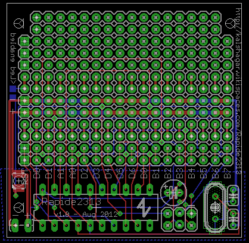

Rapide 2313 small project board
It's the same idea as the
Rapide328 : replace a minimum cost for small projects the mess of wiring your Attiny2313 on a generic pcb. You won't have to solder that annoying ISP port, crystal, etc... it's here already. Keep the complexity low.
For this design that is quite different from the
Rapide328 I put the uC on the side with 2 rows of access to the pins. Then there is 2 power rails surrounded by 2 rows of pins, in case you will solder another IC on the board. The rest is left free for use, 5 rows only howerver. Good idea or not ? I'll judge by using it.
All the schematics are on the SVN :
http://code.google.com/p/alanarduinotools/source/browse/#svn%2Ftrunk%2Feagle%2FRapide2313
Version 1.0
Received from Seeedstudio on 2012/08/21. One minor failure : on the back side I put a solder pad switch to enable the front side LED to shine. However I made a mistake and the pad is covered with green non conductive layer. A little sandpaper or some air-wiring will fix the stuff.
Another medium failure is the placement of the ISP pins : too close to the uC, you can't plug the programmer. I had to solder over it another ISP pin to make the whole stuff taller. Honnestly, this was one of the most expected feature (make programming easy) but now, even if easier than soldering the whole thing by hand, it's still a failure.
The more I see the more I think that instead of having kept the pins in the order of the chip I might have wanted to group the portd D (now there is A0-A1 right in the middle). But maybe it's just being maniac...
Overall grade : 5/10. Still better than doing everything by hand but all those small mistakes make it no so much worthy. As the purpose was to make things easier, it's definately a partial failure (-_-;)
Revised grade : 7/10. (Jan2013) That ISP stuff, just put L shaped headers and it works fine. And the back side led it's not that dramatic, it can be overcome easily. Works fine, it's used in
Guitar Rod of Command. But definately I must
remove the unnecessary silk screen around the free zone it just make the board unreadable and messes all the purpose of a quick prototyping board.